Mathematical and Statistical Foundation
This document provides a comprehensive walkthrough of the mathematical and statistical concepts underlying FormulaCompiler.jl, from basic formula representation to advanced derivative computations and variance estimation.
Table of Contents
- Statistical Model Representation
- Formula Compilation Mathematics
- Position Mapping Theory
- Derivative Computation
- Marginal Effects Theory
- Variance Estimation and Standard Errors
- Computational Efficiency Theory
Statistical Model Representation
Linear Models
FormulaCompiler.jl operates on statistical models of the form:
\[\mathbb{E}[y_i] = \mathbf{x}_i^T \boldsymbol{\beta}\]
where:
\[y_i\]
is the response for observation $i$\[\mathbf{x}_i \in \mathbb{R}^p\]
is the model matrix row (predictor vector)\[\boldsymbol{\beta} \in \mathbb{R}^p\]
is the parameter vector
Generalized Linear Models
For GLMs, we have:
\[\mathbb{E}[y_i] = \mu_i = g^{-1}(\eta_i)\]
\[\eta_i = \mathbf{x}_i^T \boldsymbol{\beta}\]
where:
\[\eta_i\]
is the linear predictor\[g(\cdot)\]
is the link function\[\mu_i\]
is the expected response
Mixed Effects Models
For linear mixed models:
\[\mathbb{E}[y_i] = \mathbf{x}_i^T \boldsymbol{\beta} + \mathbf{z}_i^T \mathbf{b}\]
where FormulaCompiler extracts only the fixed effects component $\mathbf{x}_i^T \boldsymbol{\beta}$.
Formula Compilation Mathematics
FormulaCompiler.jl transforms statistical formulas through a systematic compilation process:

Figure 1: The compilation pipeline transforms statistical formulas into position-mapped, type-specialized evaluators through systematic decomposition and analysis.
Term Decomposition
A statistical formula like y ~ x + z + x*group is decomposed into atomic operations:
\[\mathbf{x}_i = \begin{bmatrix} 1 \\ x_i \\ z_i \\ x_i \cdot \mathbf{1}(\text{group}_i = \text{B}) \\ x_i \cdot \mathbf{1}(\text{group}_i = \text{C}) \end{bmatrix}\]
Categorical Variables
For a categorical variable with $K$ levels using treatment contrast:
\[\text{ContrastMatrix} = \begin{bmatrix} 0 & 0 & \cdots & 0 \\ 1 & 0 & \cdots & 0 \\ 0 & 1 & \cdots & 0 \\ \vdots & \vdots & \ddots & \vdots \\ 0 & 0 & \cdots & 1 \end{bmatrix} \in \mathbb{R}^{K \times (K-1)}\]
Function Application
For transformed variables like log(x):
\[\text{FunctionOp}: x_i \mapsto f(x_i)\]
where $f$ is applied element-wise with appropriate domain checking.
Position Mapping
Core Concept
The key innovation is mapping each formula term to a fixed position in the output vector at compile time:
\[\text{Term}_j \rightarrow \text{Position}_j \in \{1, 2, \ldots, p\}\]
This enables:
\[\mathbf{x}_i[j] = \text{Evaluate}(\text{Term}_j, \text{data}, i)\]
Type Specialization
Each operation is embedded in Julia's type system:
struct LoadOp{Col} end # Load column Col
struct FunctionOp{Col, F} end # Apply function F to column Col
struct InteractionOp{A, B} end # Multiply terms A and BThis allows the compiler to generate specialized code for each specific formula.
Scratch Space Management
Intermediate results use a compile-time allocated scratch space:
\[\text{Scratch} \in \mathbb{R}^s \quad \text{where } s = \text{max intermediate width}\]
Derivative Computation
Jacobian Matrix
For derivatives with respect to variables $\mathbf{v} = [v_1, \ldots, v_k]^T$:
\[\mathbf{J} = \frac{\partial \mathbf{x}}{\partial \mathbf{v}^T} = \begin{bmatrix} \frac{\partial x_1}{\partial v_1} & \frac{\partial x_1}{\partial v_2} & \cdots & \frac{\partial x_1}{\partial v_k} \\ \frac{\partial x_2}{\partial v_1} & \frac{\partial x_2}{\partial v_2} & \cdots & \frac{\partial x_2}{\partial v_k} \\ \vdots & \vdots & \ddots & \vdots \\ \frac{\partial x_p}{\partial v_1} & \frac{\partial x_p}{\partial v_2} & \cdots & \frac{\partial x_p}{\partial v_k} \end{bmatrix} \in \mathbb{R}^{p \times k}\]
Automatic Differentiation
FormulaCompiler uses ForwardDiff.jl for automatic differentiation:
\[x_j = f_j(v_1, \ldots, v_k) \Rightarrow \frac{\partial x_j}{\partial v_i} = f_j'(v_i)\]
Dual numbers compute derivatives exactly:
\[f(a + b\varepsilon) = f(a) + bf'(a)\varepsilon\]
Finite Differences
For the finite difference backend:
\[\frac{\partial x_j}{\partial v_i} \approx \frac{f_j(v_i + h) - f_j(v_i - h)}{2h}\]
where $h = \epsilon^{1/3} \max(1, |v_i|)$ and $\epsilon$ is machine precision.
Single-Column Extraction
For computational efficiency, we can compute individual Jacobian columns:
\[\mathbf{J}_{\cdot,k} = \frac{\partial \mathbf{x}}{\partial v_k} \in \mathbb{R}^p\]
This avoids computing the full Jacobian when only one column is needed.
Marginal Effects
Definition
A marginal effect measures the change in the expected response due to a small change in a predictor:
\[\text{ME}_{v_k} = \frac{\partial \mathbb{E}[y]}{\partial v_k}\]
Linear Predictor Case (η)
For the linear predictor $\eta = \mathbf{x}^T \boldsymbol{\beta}$:
\[\frac{\partial \eta}{\partial v_k} = \frac{\partial (\mathbf{x}^T \boldsymbol{\beta})}{\partial v_k} = \left(\frac{\partial \mathbf{x}}{\partial v_k}\right)^T \boldsymbol{\beta} = \mathbf{J}_{\cdot,k}^T \boldsymbol{\beta}\]
Mean Response Case (μ)
For GLMs where $\mu = g^{-1}(\eta)$:
\[\frac{\partial \mu}{\partial v_k} = \frac{d\mu}{d\eta} \frac{\partial \eta}{\partial v_k} = g'(\eta) \cdot \mathbf{J}_{\cdot,k}^T \boldsymbol{\beta}\]
where $g'(\eta) = \frac{d\mu}{d\eta}$ is the derivative of the inverse link function.
Average Marginal Effects
Average marginal effects (AME) average the marginal effect across observations:
\[\text{AME}_{v_k} = \frac{1}{n} \sum_{i=1}^n \frac{\partial \mathbb{E}[y_i]}{\partial v_k}\]
Variance Estimation and Standard Errors
Delta Method
The delta method provides standard errors for smooth functions of estimated parameters. For a function $m(\boldsymbol{\beta})$:
\[\text{Var}(m(\hat{\boldsymbol{\beta}})) \approx \mathbf{g}^T \boldsymbol{\Sigma} \mathbf{g}\]
where:
\[\mathbf{g} = \frac{\partial m}{\partial \boldsymbol{\beta}}\]
is the gradient\[\boldsymbol{\Sigma} = \text{Var}(\hat{\boldsymbol{\beta}})\]
is the parameter covariance matrix
Standard Error Computation
\[\text{SE}(m(\hat{\boldsymbol{\beta}})) = \sqrt{\mathbf{g}^T \boldsymbol{\Sigma} \mathbf{g}}\]
Marginal Effect Standard Errors
Linear Predictor Case
For marginal effects on $\eta$:
\[m = \mathbf{J}_{\cdot,k}^T \boldsymbol{\beta} \Rightarrow \mathbf{g} = \frac{\partial m}{\partial \boldsymbol{\beta}} = \mathbf{J}_{\cdot,k}\]
Therefore:
\[\text{SE}(\text{ME}_{\eta,k}) = \sqrt{\mathbf{J}_{\cdot,k}^T \boldsymbol{\Sigma} \mathbf{J}_{\cdot,k}}\]
Mean Response Case
For marginal effects on $\mu$ with link function $g$:
\[m = g'(\eta) \cdot \mathbf{J}_{\cdot,k}^T \boldsymbol{\beta}\]
The gradient is:
\[\mathbf{g} = \frac{\partial m}{\partial \boldsymbol{\beta}} = g'(\eta) \mathbf{J}_{\cdot,k} + (\mathbf{J}_{\cdot,k}^T \boldsymbol{\beta}) g''(\eta) \mathbf{x}\]
where $\mathbf{x}$ is the model matrix row and $g''(\eta)$ is the second derivative.
Average Marginal Effects
For AME, the gradient is the average of individual gradients:
\[\mathbf{g}_{\text{AME}} = \frac{1}{n} \sum_{i=1}^n \mathbf{g}_i\]
By linearity of expectation:
\[\text{Var}(\text{AME}) = \mathbf{g}_{\text{AME}}^T \boldsymbol{\Sigma} \mathbf{g}_{\text{AME}}\]
Link Function Derivatives
Common link functions and their derivatives:
| Link | $g(\mu)$ | $g^{-1}(\eta)$ | $\frac{d\mu}{d\eta}$ | $\frac{d^2\mu}{d\eta^2}$ |
|---|---|---|---|---|
| Identity | $\mu$ | $\eta$ | $1$ | $0$ |
| Log | $\log(\mu)$ | $\exp(\eta)$ | $\exp(\eta)$ | $\exp(\eta)$ |
| Logit | $\log(\frac{\mu}{1-\mu})$ | $\frac{1}{1+e^{-\eta}}$ | $\mu(1-\mu)$ | $\mu(1-\mu)(1-2\mu)$ |
Computational Efficiency
Zero-Allocation Design
The key to zero-allocation performance is eliminating runtime memory allocation:
- Compile-time type specialization: All operations encoded in types
- Fixed memory layout: Pre-allocated buffers reused across calls
- Stack allocation: Small temporary values on the stack
- In-place operations: Modify existing arrays rather than creating new ones
Position Mapping Efficiency
Traditional approach:
\[O(p \cdot \text{complexity}(\text{formula}))\]
Position mapping approach:
\[O(p) \text{ with compile-time } O(\text{complexity}(\text{formula}))\]
Memory Complexity
- Traditional: $O(np)$ for full model matrix
- FormulaCompiler: $O(p)$ per row evaluation
- Scenarios: $O(1)$ via
OverrideVectorregardless of $n$
Derivative Efficiency
- Full Jacobian: $O(pk)$ computation and storage
- Single column: $O(p)$ computation and storage
- AME accumulation: $O(np)$ time, $O(p)$ space
Backend Selection Trade-offs
| Backend | Speed | Memory | Accuracy |
|---|---|---|---|
:fd | Medium | 0 bytes | Good |
:ad | Fast | Small | Excellent |
Choose :fd for production AME (many rows), :ad for small samples requiring high accuracy.
Implementation Notes
Type Stability
All functions maintain type stability:
f(x::Float64)::Float64 # Compiler can optimize aggressivelyGenerated Functions
Critical paths use @generated functions to move computation to compile time:
@generated function evaluate(compiled::UnifiedCompiled{T,Ops}, ...)
# Generate specialized code based on Ops type parameter
return quote
# Unrolled, type-stable operations
end
endNumerical Stability
- Finite differences: Adaptive step size based on magnitude
- Link functions: Numerical safeguards for extreme values
- Matrix operations: Use stable BLAS routines
This mathematical foundation enables FormulaCompiler.jl to achieve both computational efficiency and statistical accuracy, making it suitable as a foundation for advanced statistical computing applications.